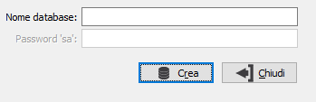

La procedura consente di creare il database del concentratore necessario per lo scambio dati tra l'applicazione ed i dispositivi. Una volta creato il database, sarà aggiornata in automatico la configurazione base di OS1Mobile, inserendo il nome del database creato nel relativo campo della configurazione.

NOME DATABASE: nome del database del concentratore da creare.
PASSWORD 'sa': password dell'utente sa (system administrator) del server SQL al quale siamo collegati; viene richiesta solo se si è collegati con un utente diverso.